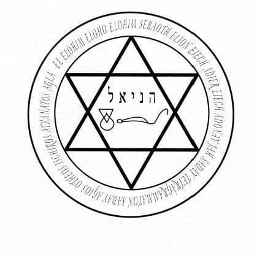

The simplicity of what follows should not be underestimated. If you sense that somebody is attracted to you, this ritual can turn the desire into love.
This works whether or not you have begun a relationship already. You can use the ritual when the person in question is a friend, a casual lover or a more serious partner. It will not work on complete strangers, and it will not work if there is no attraction. If there is no attraction, use other parts of the book to get to that stage.
The ritual is powerful. Be warned that the results can be so powerful that they are life changing. I am with my life partner as a result of this ritual.
Be careful what you wish for. If you are wise, you will only use a love spell when you are sure that falling in love will work for both of you. This spell will work on you as well, making you fall more deeply in love than you already are.
At one point in the ritual you will call on the angel Haniel. For that, print out or copy the following sigil, and have it nearby. Again, it can be found on the website if required.
http://galleryofmagick.com/images/

The ritual makes use of powerful spirits that are bound by the powers of the angel Arzel. Popularized in the book known as The Miracle of New Avatar Power, by Goef Gray-Cobb, Arzel is the key to this ritual. Gray-Cobb’s book, although an excellent starting point for this kind of magick, did not give enough detail on Arzel for me to get the best results. In his book you simply call on Arzel (he even gets the pronunciation wrong) and petition for help. There is a better way.
In all occult work, sensing a spirit’s presence can be quite difficult, especially if you are new to magick. The wonderful thing about Arzel is that if called in this way, you will sense a glorious, strong and powerful presence who will bind the other spirits to do your bidding.
First, a word on the pronunciation of Arzel. The best pronunciation is ARZ-ALE, where ALE rhymes with ‘pale’. I often stress that pronunciation is no blockage to magick, but with Arzel the pronunciation is important. If you get it wrong, the magick will still work, but the connection with Arzel will be weaker and the results more haphazard.
Make sure you have the sigil of Haniel nearby, and begin the ritual by evoking Arzel.
This is the best method for evoking Arzel as rapidly as possible.
In a quiet space, sit or stand facing East, and repeat the phrase:
ANKAR YODE HAY VAW HAY
Say the words out loud. They are pronounced as written.
Ankar sounds like ‘an car’.
Yode sounds like Yoda without an ‘a’ at the end.
Hay sounds like, ‘Hay’ or ‘Hey’.
Vaw sounds like ‘raw’ but with a v.
Repeat this phrase until you feel that you are beginning to relax, and that your mind is entering a trance-like state. You don’t need to be out of your mind - just let yourself relax into a magickal state of mind as you say these words. When you feel ready to call on Arzel- it might take to seconds or a few minutes - say the following.
Kosu harim silah va’anafeha arz-ale.
(KOH-SUE HAR-IM SIL-AH VA-ANNA-FEHA ARZ-ALE)
Say this three times. You may feel Arzel’s presence on the first call. You may sense a bright white light, or smell the scent of trees, or hear pleasant, calming noises. If you don’t feel much, don’t worry - Arzel is listening. Arzel comes when called and is working for you.
Now say, ‘I call on thee, mighty Arzel (ARZ-ALE), to assist me with this work of magick.’
Say the following, replacing N. with the name of the one you love.
‘In the Power of the Names EH-HEH-YEH, YEH-HO-VO-EL-OH-HEEM and YEH-HO-VO-EL-OH-AH-VAY-DAH-ASS I place this Invocation with Sisera (SEE-SAIR-AH), genius of desire and Jazer (and JAZZ-AIR), genius who compels love. Know that I require and command thee to bring me the love and passion of N. Send my love into his/her heart so that s/he returns my love. Be Thou ruled by me in the Names SHAH-DIE-ELL-KIGH and AH-DOH-NIGH-HA-AH-RETZ.’
Stare at the sigil of Haniel.
Say the word ‘Eh’. This is the Greek vowel eta, which sounds like the middle of the word ‘set’. It should take two or three seconds to say this word, starting at a high pitch and ending low. Saying this word ignites the sigil of Haniel, and switches it on, ready for use.
Chant the name Haniel for a minute or so. You may or may not sense the angel’s presence. If you do, continue with the next part immediately. If you sense no presence, keep going for a minute and know that Haniel can hear you. Then say:
‘By the power of Arzel, I call on Haniel to warm the heart of N., so that s/she feels my love and returns it a thousandfold. I seal this command with the word ANNA-THAN-TOS. Thus time moves on.’
Feel a brief Thank You, directed towards the angel Haniel, to the spirits Jazer and Sisera, and to Arzel who has overseen the operation. You do not need to plead and beg or act as though you are inferior. These spirits are powerful but they came because you called, and because it is their duty to serve those who call them. So thank them politely, and know that they are dismissed and leaving you now to do the work.
The ritual is done. You can put the sigil of Haniel away, and forget about the results you seek by keeping yourself busy with something else. Note that the one you love may declare passion and love within minutes or may keep the feelings secret. The wisest workers perform this ritual every day for 11 days.